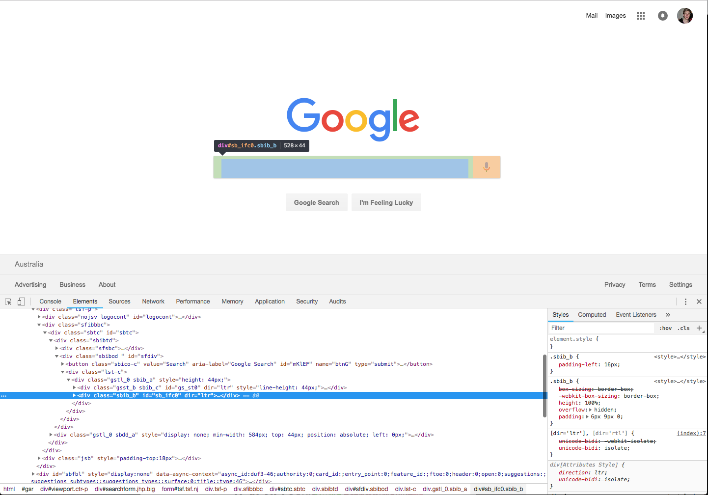
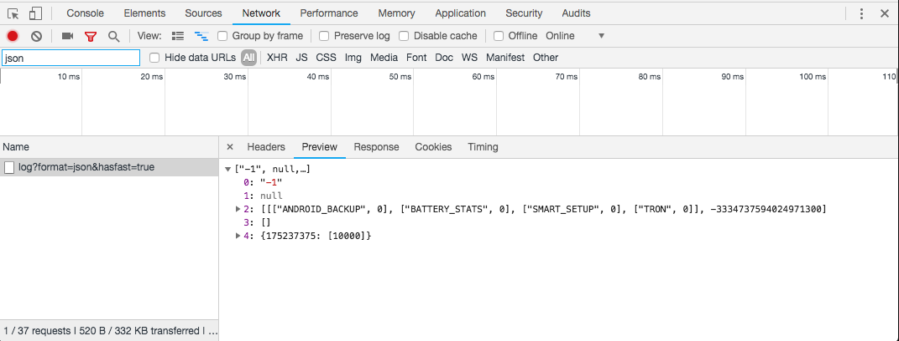

Intro to the Browser & the DOM
Nick Whyte | @nickw444 | @nickw444
5 minute HTML Refresher
Simple HTML5 Document
<!DOCTYPE html>
<html>
<head>
<meta charset="UTF-8">
<title>Title Goes Here</title>
</head>
<body>
Hello World
</body>
</html>
Adding CSS
Inline Styles
<head>
<meta charset="UTF-8">
<title>Title Goes Here</title>
<style>
/* your CSS here */
</style>
</head>
CSS File
<head>
<meta charset="UTF-8">
<title>Title Goes Here</title>
<link rel="stylesheet" href="src/index.css">
</head>
Adding Scripts
Inline Scripts
<head>
<meta charset="UTF-8">
<title>Title Goes Here</title>
<script>
/* your code here */
</script>
</head>
<head>
<meta charset="UTF-8">
<title>Title Goes Here</title>
<script src="src/index.js"></script>
</head>
Basic HTML Elements
div: A container element that can contain zero or more child elements. A block level element.p: A paragraph elementspan: generic inline container for phrasing content. Similar to div, except span is an inline elementh1,h2,h3,h4,h5,h6: A heading element- ...and many more!
Let's start building our app!

Devtools
(Google Chrome)Elements Panel

https://developers.google.com/web/tools/chrome-devtools/inspect-styles/
Console

Network Inspector

https://developers.google.com/web/tools/chrome-devtools/network-performance/
Sources Panel

Programming For the Browser
window.alert
window.alert('Hello World!')
window.location
console.log()
console.log('Hello World!')
n.b. You'll need to open your console to see the output of this demo!
console.?
The console can do a lot more than just plain old strings:
console.clear()
console.log()
console.error()
console.warn()
console.table()
console.group()
Console introspection
You can also log JS objects to the console and introspect them:

Events & Interactions
onClick event (html)
<button onClick="window.alert('Hello COMP2041!')">
Say Hello
</button>
Binding an event
target.addEventListener(type, listener[, options]);
type:'click','focus','blur','keydown', etclistener: The function to execute when the event occurs.
onClick event (html/js)
<button id="hello-button">Say Hello</button>
const helloButton = document.getElementById('hello-button');
helloButton.addEventListener('click', () => {
window.alert('Hello COMP2041 from JS!');
});
mouseMove event
window.addEventListener('mousemove', ({x, y}) => {
console.log({x, y});
});
Timers
setTimeout / clearTimeout
document.setTimeout(() => {
window.alert('Done!')
}, 1000);
setInterval / clearInterval
let timer = undefined;
let counter = document.getElementById('counter');
function tick() {
counter.innerText = parseInt(counter.innerText) + 1;
}
function onStartClick() {
timer = window.setInterval(tick, 1000);
}
function onStopClick() {
window.clearInterval(timer);
}
Counter: 0
Clock Drift Demo
Actual Time
0.000
Interval Time
0.000
Lets fix the clock drift in our application
Behind the Scenes
(How JS gets executed in your browser)
Example
const s = new Date().getSeconds();
setTimeout(function () {
// prints out "2", meaning that the callback is not called immediately after 500 milliseconds.
console.log("Ran after " + (new Date().getSeconds() - s) + " seconds");
}, 500);
while (true) {
if (new Date().getSeconds() - s >= 2) {
console.log("Good, looped for 2 seconds");
break;
}
}
Querying the DOM
Querying Element Content
Sometimes you may want to read the content of an element
Hello World!
<p id="text">Hello World!</p>
const text = document.getElementById('text');
console.log(text.innerText);
Querying Element Bounds
Hello World!
<p id="text">Hello World!</p>
const text = document.getElementById('text');
console.log(text.getBoundingClientRect());
Manipulating the DOM
Adding a CSS class
This demo adds a class to a span node.
Hello World!
.red { color: red; }
<p>Hello <span id="worldSpan">World!</span></p>
const worldSpan = document.getElementById('worldSpan');
span.classList.add('red');
Modifying Inline Styles
Hello World!
<p>Hello <span id="worldSpan">World!</span></p>
const worldSpan = document.getElementById('worldSpan');
span.style.fontSize = '2em';
Modifying innertext
It's also easy to update the content of a HTML Element
Hello World!
<p id="text">Hello World!</p>
const text = document.getElementById('text');
text.innerText = 'Goodbye World!';
Now that we know how to manipulate the DOM, lets render the stopwatch on the page.
60FPS
requestAnimationFrame demo
const box = document.getElementById('box');
let offset = 0;
function renderFrame() {
requestAnimationFrame(() => {
offset += 10;
box.style.transform = `translateX(${offset}px)`;
// Enqueue a subsequent render cycle for the next frame.
renderFrame();
});
}
renderFrame();
Using requestAnimationFrame lets improve our application to have 60fps updates
Thanks
Nick Whyte | @nickw444 | @nickw444
p.s. we are looking for summer interns and 2019 graduates!
Please email
nick@canva.com
if you are interested